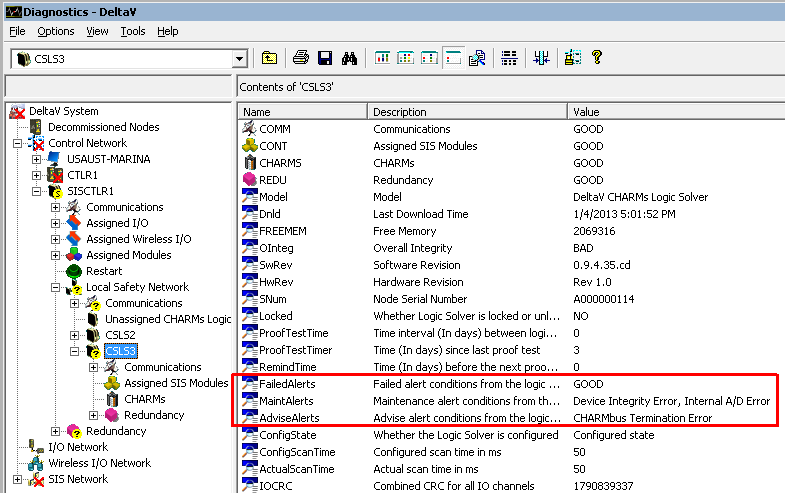
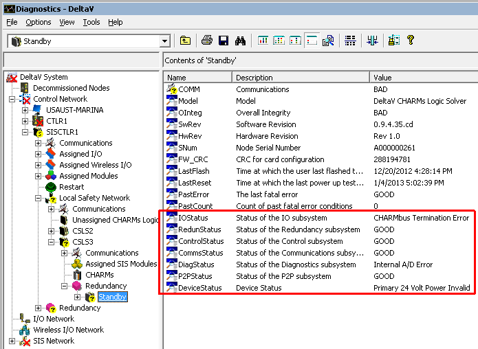

How DeltaV SIS systems annunciate faults
DeltaV SIS systems provide standard alarms to annunciate, in DeltaV Operate, faults detected by the CSLS. No special configuration is needed. At runtime the alarms are part of a container with the CSLS name. When a CSLS alarm appears on the alarm banner in DeltaV Operate and is clicked by the operator, the CSLS faceplate opens. The faceplate shows the active alarm(s): FAILED_ALM, MAINT_ALM, ADVISE_ALM, or COMM_ALM. It also shows the text for the active condition or the words Multiple conditions if more than one alert condition is active for the particular alarm.
A button on the faceplate toolbar opens Diagnostics Explorer in the context of the CSLS. The CSLS container has a number of diagnostic parameters accessible at runtime by the CSLS path similar to those of controllers.
CSLS_name/param_name,
CSLS_name/COMM/param_name,
CSLS_name/CHARMS/CHMx-xx/param_name,
CSLS_name/REDU/param_name,
CSLS_name/REDU/STBY/param_name,
A redundant CSLS has diagnostic parameters for each CSLS unit. Additional diagnostics parameters are provided under active CSLS unit to report the state of the redundant pair. The following figure is an example of Diagnostics Explorer showing the diagnostic parameters for the highlighted CSLS. There is an alerts bitstring parameter associated with the Failed, Maint, and Advise alarms. The alarm is active if any bit is set in the corresponding alerts parameter.
The Comm alarm is active if the DeltaV SIS controller cannot communicate with the CSLS (with both units, if redundant). Please note that CSLS Comm alarm is not necessarily an indication of the CSLS failure since it could be merely a wire disconnect.

The following figure is an example of the Diagnostics Explorer showing the diagnostic parameters of the standby CSLS unit of a redundant pair. There is a bitstring parameter for the status of each subsystem. The bits in these subsystem status parameters map into bits of the alerts parameters in the CSLS. A simplex CSLS has direct mapping, but a redundant CSLS combines most of the subsystem status conditions from both partners into the alerts parameters. If the subsystem status condition is active in either CSLS unit, the mapped alert condition is active.

Refer to the SLS Diagnostic Parameters topic in the DeltaV SIS book in DeltaV Books Online for details on the subsystem status and alert bitstring parameters.
The text and meaning of each condition
How subsystem status bits map into alert bits
What action to take when an alert condition becomes active
Which conditions annunciate and impact device integrity
Which conditions are event-only and do not impact device integrity
You can change the priority of the Failed, Maint, Advise, and Comm alarms. Because certain error conditions can exist momentarily, avoid alarm priorities that are auto-acknowledging.